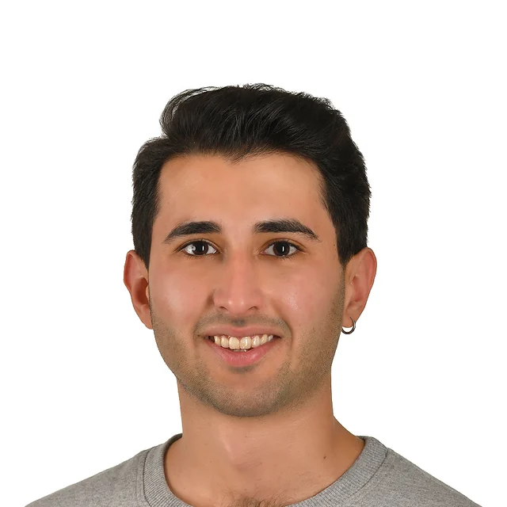

Let's talk
You scrolled all the way here. I think we should talk.

+31 6 8558 5100
Conversation starters
If you'd rather not start with work, pick one of these.
Piano and bass at jam sessions
Cinema, up to three times a week
up to 3×
Basketballbut I'm up for almost any sport
Yoga
Board games
Cooking every day
Watch my films
Stay for two unscripted short films I made when I wanted to become a filmmaker.
I made films about the people and relationships that shaped my life. I chose these two because they can be watched without a language barrier.


Content warning: this film contains violence.
Change: An Amsterdam Journal2023
His first love was a city. A journey through Amsterdam, from being a tourist to feeling at home, and leaving after falling in love.
How to Boil an Egg2024
A couple shows how to boil an egg, and the egg stands for a child. Through them I told the story of someone who affected me deeply. It is hard to watch, but I wanted it to be remembered.
Back to the beginning ↑